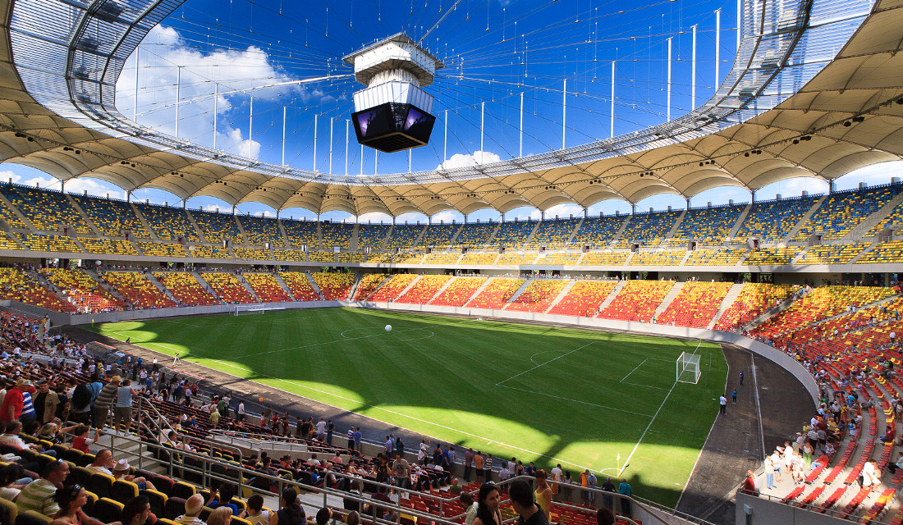
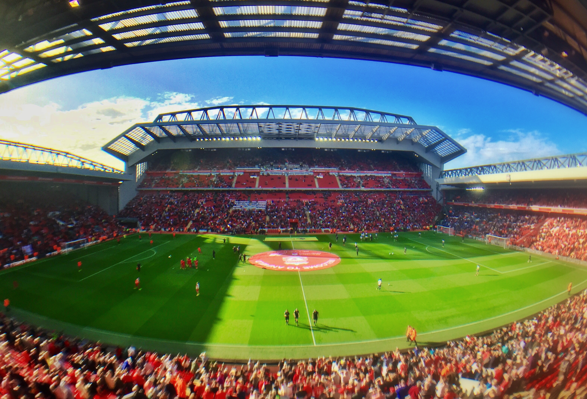
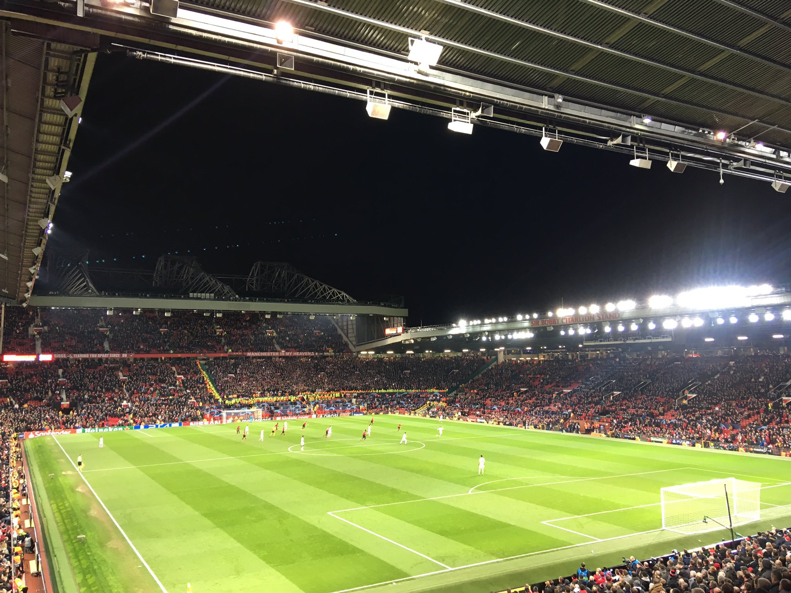

Every stadium is different. The ranking system incorporates four key
metrics. The atmosphere, viewing angles, architecture, and surrounding
area. These four metrics incorporate a hollisitc perspective at futbol
stadiums. They are beauty, art, economic staples, and create a local
clture. The atmosphere includes the fan culture, chants, and proximity
to the game pitch within the stadium. Viewing includes the ability to
see the game and any obstructions or odd angles. Architecture analyzes
the building's design and creative features that provide a taste of
art for all futbol fans. Finally, the surrounding area incorporates
the town or city and whether this improves or decreases the value of
the stadium. It is difficult to properly asses a stadium on these four
metrics, but is conducted through experiences, references, research,
and football knowledge.
#12 Stade Louis II (Monaco)
Being in the top 12 for stadiums in Europe is a feat nonetheless.
However, there are a few reasons for placing Stade Louis at twelth
compared to the other stadiums listed. The architecture is marvelous,
images from the mountaintops, the unqiue rooftop design screams
Monaco, and the structure within the stadium boosts the overall
designs. The atmoshpere is vibrant, yet the biggest downside is the
track that surrounds the field. This track is the biggest downside to
any footballer or fan. It creates seperation between the fans and
players which negatively impacts the atmosphere. Due to strong
architecture the viewing is one the best - no columns, nets, or other
obstructions for the fans. Perfect ciruclation allows for fans to
catch the action from any angle. Fianlly, the surrounding area for
Monaco is stunning. This stadium has very little downside other than
the track and the expense associated within Monaco. However,
everything about this stadium puts it on the list of the 12 best
stadiums in Europe to go visit!
#11 Sukru Saracoglu Stadium (Istanbul, Turkey)
The Sukru Saracoglu Stadium in Turkey is one of the country's most
iconic football arenas. It has been the home of Fenerbahce SK since
1908, and the stadium has undergone several renovations to improve its
facilities and enhance the overall fan experience. The ranking system
incorporates four key metrics that can be used to assess the stadium's
value: atmosphere, viewing angles, architecture, and surrounding area.
The atmosphere at the Sukru Saracoglu Stadium is known to be electric,
with passionate fans who create an intense and supportive environment.
The viewing angles are also impressive, with excellent sightlines and
clear views of the pitch. The stadium's architecture is striking and
modern, with unique design features that provide a taste of art for
all football fans. The downside to this stadium when compared to the
remaining 10 stadiums, is the compeititon within the stadium and
potential danger once outside the secure stadium. Nonetheless, the
Sukru Saracoglu Stadium is a top-tier football stadium that
exemplifies the beauty, art, economic staples, and local culture that
make football such a beloved sport.
#10 Arena Nationala (Bucharest, Romania)

The Arena Nationala in Bucharest, Romania, is a shining example of a
modern football stadium that excels in all four key metrics used to
assess its value. The stadium's atmosphere is electric, with
passionate fans filling the stands and creating an unforgettable
experience for all in attendance. The viewing angles are outstanding,
with clear sightlines and no obstructions, ensuring that every fan can
enjoy the game to the fullest. The stadium's architecture is sleek and
modern, featuring state-of-the-art facilities that cater to all fan
needs, from seating to concessions. The surrounding area is bustling
with life, offering an array of dining and entertainment options that
add to the overall experience. The combination of these four metrics
creates a truly holistic perspective of the stadium, demonstrating its
value not just as a sporting venue but as a cultural and economic
staple of the city. The downside to Arena Nationale is the lack of
history within the stadium as it was built in 2011. These stadiums are
history caputured in time and a reason why Arena Nationale is 10th.
Overall, an amazing stadium, place, and a landmark to stop in Europe.
#9 Anfield Stadium (Liverpool, England)

Anfield, situated in Liverpool, UK, has consistently ranked high on
all four key metrics of the ranking system. The stadium is known for
its captivating atmosphere, fueled by passionate fans and iconic
chants, providing an electrifying experience for every football game.
Furthermore, the stadium offers excellent viewing angles, ensuring an
unobstructed view of the game from any seat. The stadium's
architecture is also impressive, featuring the iconic Kop stand and a
newly renovated main stand, which adds to the stadium's artistic
appeal. Additionally, the surrounding area of Anfield, located in the
heart of Liverpool, adds to the stadium's value, with its rich history
and cultural significance. It is hard to knock Anfield, but the
proximity and similarity to other English stadiums is the reason I put
a few other European stadiums above Anfield. Overall, Anfield is an
exceptional stadium that provides a comprehensive experience for
football enthusiasts, making it one of the world's most remarkable
stadiums.
#8 Celtic Park (Glasgow, Scotland)
Celtic Park, nestled in the heart of Glasgow, Scotland, stands out as
a premier football stadium on a global scale. The ranking system
utilized to evaluate futbol stadiums incorporates four critical
metrics, all of which Celtic Park excels at. The atmosphere within the
stadium is nothing short of electric, as the ardent fans of Celtic FC
create an unrivaled, passionate environment. Viewing angles at Celtic
Park are impeccable, with each seat offering an unobstructed view of
the pitch. The stadium's architecture is a breathtaking masterpiece,
featuring unique structures and design elements. Moreover, the
surrounding area is steeped in cultural history and offers a
captivating backdrop for a football match. There is very little
downside to Celtic Park. The smallest complaint would be the lack of
top-tier matches with the Champions League or regular matchplay.
Celtic Park represents a perfect fusion of beauty, art, and economic
stability, which should be inherent in any football stadium. It is
undoubtedly a must-visit venue for any ardent football enthusiast, and
one that truly encapsulates the holistic essence of a top-tier futbol
stadium.
#7 San Siro (Miland, Italy)
San Siro stadium, situated in Milan, Italy, is globally recognized for
its remarkable design, hosting two of Italy's most successful football
clubs, Inter Milan and AC Milan. To evaluate its worthiness, a ranking
system incorporating four key metrics is employed: atmosphere, viewing
angles, architecture, and surrounding area. The stadium's atmosphere
stands out with its passionate fans and historic chants. The stadium
also offers excellent viewing angles with no obstructions or blind
spots. The San Siro's unique architectural features and design further
add to its prestige. Lastly, the stadium's surrounding area, with its
rich culture and history, makes it a must-visit for football fans
worldwide. These four metrics provide a holistic perspective on the
beauty, art, economic staples, and local culture that the San Siro has
created. As we move closer to #1, it is difficult to differentiate
when it is mostly personal preferance. However, Milan is very
expensive and the prices within the San Siro are no joke. No soccer
fan wants to burn a hole in their pocket while watching! Overall, the
San Siro stadium stands as a true gem in the world of football, and
its ranking based on these metrics is a testament to its worthiness.
#6 Allianz Arena (Munich, Germany)
Allianz Arena Munich, Germany is a stadium that is highly regarded for
its impressive ranking across the four key metrics of the ranking
system. The atmosphere at Allianz Arena is one of the best in the
world, with passionate fans and electrifying chants that create an
unforgettable experience for all who attend. The stadium's design also
ensures that the viewing angles are excellent, allowing for an
unobstructed view of the game and the ability to fully immerse oneself
in the action on the pitch. In terms of architecture, Allianz Arena's
innovative design is a stunning representation of art and engineering,
making it a true marvel to behold. Finally, the surrounding area of
Munich adds to the stadium's overall value, as the city itself is a
hub for culture, history, and entertainment. At this point it is very
difficult to distinguish. Bayern is world-class and so is their
stadium. From here on out the rankings are very subjective. All of
these factors combined make Allianz Arena Munich, Germany one of the
most highly ranked and sought after football stadiums in the world.
#5 Santiago Bernabeu (Madrid,Spain)
The Santiago Bernabeu in Madrid, Spain, is a world-renowned football
stadium that is highly ranked across the four key metrics of the
ranking system. The atmosphere at the stadium is electric, with a
passionate fan base that creates a buzzing and energetic environment,
especially during matches. The stadium is designed in a way that
provides an excellent viewing experience for spectators, ensuring that
all seats have a clear view of the pitch. In terms of architecture,
the Santiago Bernabeu is a stunning masterpiece that showcases the
beauty and art of football stadiums. The stadium's unique design and
features make it stand out as one of the most impressive and iconic
stadiums in the world. Finally, the surrounding area of Madrid adds to
the overall value of the stadium, with the city's rich culture and
history providing an immersive experience for visitors. Overall, the
Santiago Bernabeu Madrid Spain ranks highly across all four metrics,
making it a must-visit destination for football fans from all around
the world.
#4 Signal Iduna Park (Dortmund, Germnay)
Signal Iduna Park in Borussia Dortmund, Germany is a stadium that is
highly ranked across all four key metrics of the ranking system. The
atmosphere at Signal Iduna Park is unparalleled, with passionate fans
who create an electric and buzzing environment during matches. The
stadium's design ensures that all seats have a clear view of the
pitch, providing an excellent viewing experience for spectators. In
terms of architecture, Signal Iduna Park is a masterpiece that
showcases the beauty and art of football stadiums. The stadium's
unique features and design make it stand out as one of the most
impressive and iconic stadiums in the world. Finally, the surrounding
area of Dortmund adds to the overall value of the stadium, with the
city's rich culture and history providing an immersive experience for
visitors. Overall, Signal Iduna Park Borussia Dortmund, Germany ranks
highly across all four metrics, making it a must-visit destination for
football fans from around the world.
#3 Old Trafford (Manchester, England)

Old Trafford in Manchester, UK is a stadium that is highly ranked
across all four key metrics of the ranking system. The atmosphere at
Old Trafford is legendary, with a passionate fan base that creates an
electrifying and buzzing environment during matches. The stadium's
design ensures that all seats have a clear view of the pitch,
providing an excellent viewing experience for spectators. In terms of
architecture, Old Trafford is a masterpiece that combines modern and
classic elements to create a stunning and impressive football stadium.
The surrounding area of Manchester adds to the overall value of the
stadium, with the city's rich culture and history providing an
immersive experience for visitors. Overall, Old Trafford Manchester,
UK ranks highly across all four metrics, making it a must-visit
destination for football fans from around the world. The stadium is
also an economic staple for Manchester, attracting millions of
tourists every year and providing a boost to the local economy.
#2 Camp Nou (Barcelona, Spain)
Camp Nou in Barcelona, Spain is a stadium that ranks highly across all
four key metrics of the ranking system. The atmosphere is charged with
an energetic and passionate fan base, creating an electric buzz during
matches. The stadium's design guarantees an excellent viewing
experience for spectators, with all seats offering an unobstructed
view of the pitch. The architecture of Camp Nou is a masterpiece that
exemplifies the beauty and art of football stadiums. Its unique design
and features make it an iconic and impressive stadium. Moreover, the
surrounding area of Barcelona adds to the overall value of the
stadium, with its rich culture and history providing an immersive
experience for visitors. In summary, Camp Nou Barcelona, Spain is a
must-visit destination for football enthusiasts from around the world,
and an economic staple for Barcelona, attracting millions of tourists
every year, and boosting the local economy.
#1 Wembley Stadium (London, England)
Wembley Stadium in London, UK is considered the top destination for
football enthusiasts from around the world, thanks to its rich history
and exceptional games. The atmosphere at Wembley is unmatched, with
passionate fans creating an electric and buzzing environment during
matches. Its design guarantees an unobstructed view of the pitch,
ensuring a remarkable viewing experience for all spectators. Wembley's
architecture is a masterpiece that exemplifies the beauty and art of
football stadiums, making it one of the most iconic and impressive
stadiums in the world. Additionally, the surrounding area of London
adds to the stadium's value, providing a rich cultural experience for
visitors. In conclusion, Wembley Stadium is a must-visit destination
for football lovers and an economic staple for London, attracting
millions of tourists every year and contributing significantly to the
local economy.